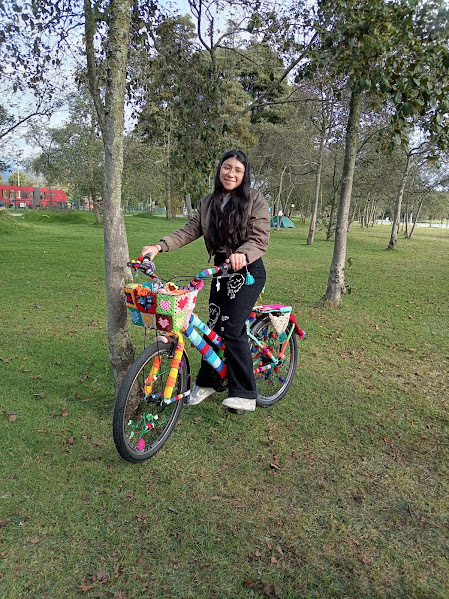

Misión
Elaborar productos tejidos de excelente calidad que transmitan emociones y acompañen momentos importantes.

Arte y Crochet nació en 2023, con el propósito de crear detalles únicos tejidos a mano, convirtiendo cada regalo en un recuerdo especial. Comenzó como un pequeño proyecto personal y desde ese momento ha crecido y mejorado mucho, con cada tejido se aprende algo nuevo y se perfecciona la tecnica, para entregar productos de excelente calidad, con un toque personal y que haga feliz a quien lo recibe.
Cada pieza refleja creatividad, dedicación y el amor por el trabajo artesanal.
Elaborar productos tejidos de excelente calidad que transmitan emociones y acompañen momentos importantes.
Ser una marca reconocida por la creatividad, la calidad y el valor artesanal de cada una de nuestras creaciones.